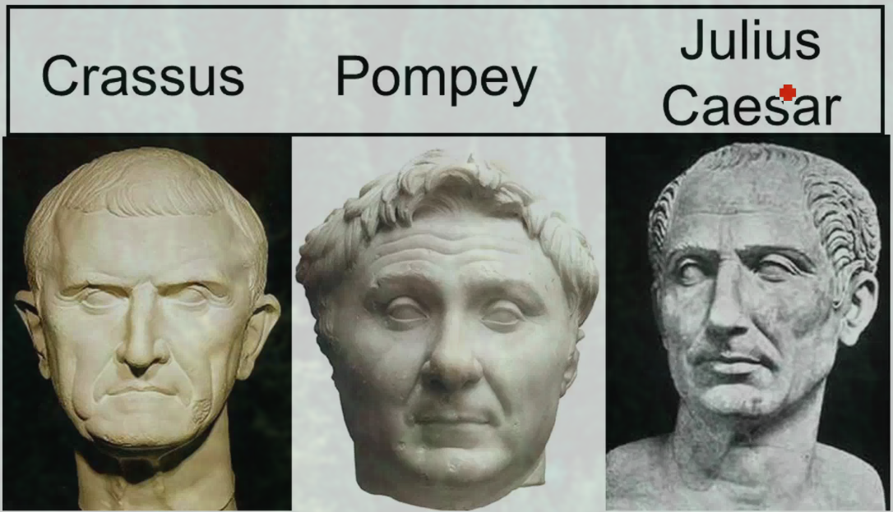
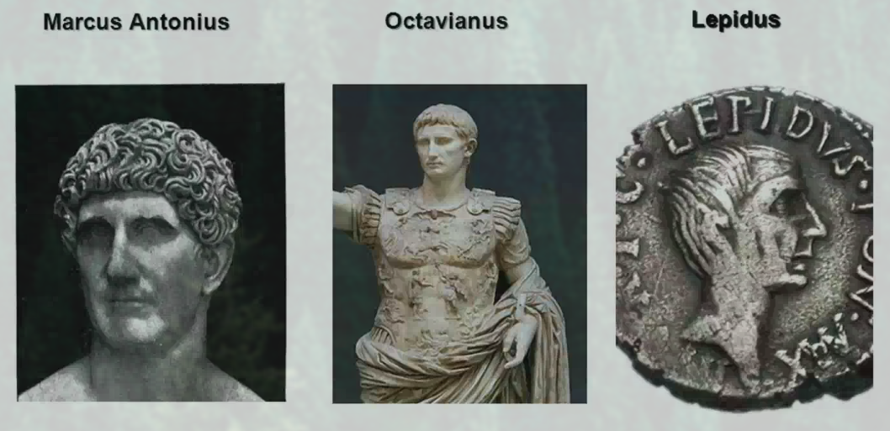
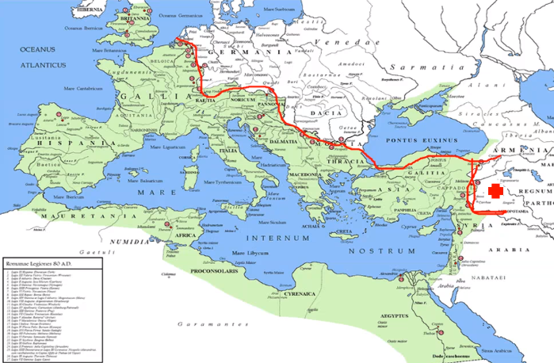
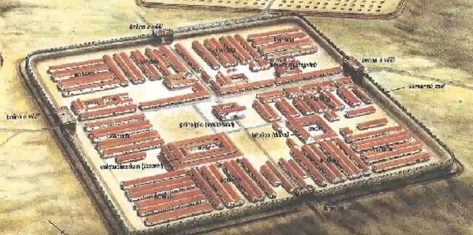
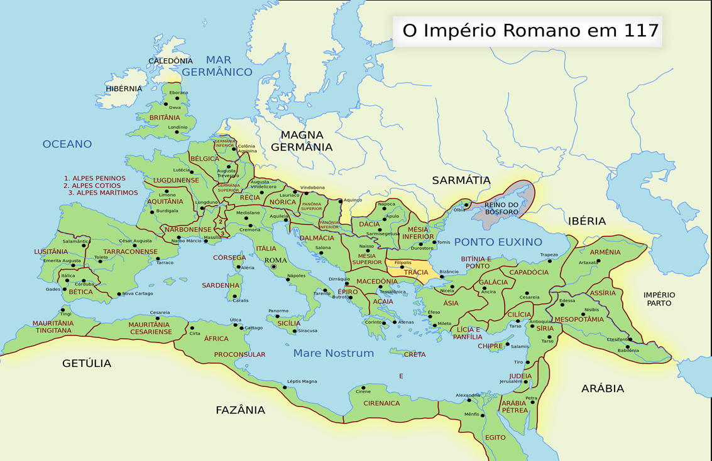

prvy triumvirat
60.p.n.l. - 55 p.n.l. (?)

samozrejme ze sa navzajom povrazdili az ostal iba julius caesar
social tudies for kids na tuto temu
cezar mal uzemie francuzska
gaius pompeius mal uzemie talianska
marcus licinius mal vychod
zacali sa zabijat
crassus a pompeyus boli konzulmi
crassus zomrel v bitke
cezar zacal expandovat - prekrocil rubykon
pompeius utiekol do egyptu
zabili ho v egypte :)
cezara nakoniec zabodali polonaheho ked utekal a potkol sa na shodoch (noob)
druhy triumvirat
rok po cezarovej smrti
34-31 p.n.l

vyhral oktavianus
oktavianus bol
prvym cisaron, samozrejme, lebo cezar nemohol byt cisar,
kedze to pochadza z jeho mena
social studies for kids na tuto temu - je to celkom kul stranka
antonius mal vychod a egypt
gaius octavois ziskal francuzsko a zapad
leipidus mal cast afriky pod talianskom
principat vs dominat
Principat
Dominat
preklad
Princes inter pares - prvy medzi rovnymi
Dominus et deus - pan a boh
forma vlady
hah ako komunisti - "My SmE Si VsEtCi RoVnI" ale vskutocnosti vladne on
vpodstate orientalna despocia (kubo to je to ze panovnik je povazovany za boha)
bol ako boh - zobral prezyvku augustus
pretoriani - prvi vojaci co mohli vstupit do rimu - vela veci radili - mali cisara ochranovat, no nakoniec ho sami zavrazdili
stare dievky platili specialne dane
upevnil kult bohyne vesty - domacnosti: podoroval aby ludia mali vela deti, svadby boli povinne
zakon o dedicnost tronu - cisar urci nastupcu - nie uplne rodinu - existuje podla toho aj "dynastia adoptovanych cisarov", posledne odbdobie, ktore znamenalo rozkvet rimu, po tom - (citujem hudakovu)cele zle - Moze to byt preto, lebo tento system adoptovanych cisarov je naozaj celkom funkcny - adoptuje si dieta a vychova ho presne tak ako chce, na cisara, takze vznikne cisar velmi schopny, vychovany presne na to na co ma
rozvoj kultury - zacian velka vystavba rimskej rise a mesta rima ako takeho - rozsiruje sa architektura, kultura - chlieb a hry: kupele, divadla, spolocenske udalosti; kazdy si najde svoje zamestnanie, rozvija sa obhod, remesla: "dostal som rim z tehal a zanecham rim z mramoru" (alebo tak nejako)
vovnutri v rime sa nebolojvalo (od rubykonu nadol), uzatvaraju sa diplomaticke dohody s germanmi, germani sa zacinaju stavat sucastou rimu, dostavaju rimske obcianstvo, zacinaju sa vystavovat pevnosti na hraniciach - limes romanus
cast limes romanus bola aj na slovensku
naviac je zachovane v anglicku - hadrianov val

a takto mohol vyzera taky rimansky tabor:

Principát
oktavianus

Júliovsko-Klaudiovská dynastia
Tiberius
Caligula
Claudius
Nero
Flaviovska Dynastia
vybuchol vezuv
koloseum
dynastia adoptivnych cisarov
Trajan
Hadrian
Marcus Aurelius
Najvacsi rozmach
MA - filozof na trone
bol aj na slovenku

zacina vojenska kriza:
latifundium ¯\_( ͡° ͜ʖ ͡°)_/¯ - upadok polnohospodarstva
KOLONAT - velkostatkari si najimaju slobodnych rolnikov
davaju im zlu podu
ze si mozu nechat to co dopestuju na istu hranicu, ale ani tolko vypestovat nevedeli
zacali rolnikov fyzicky trestat - stavali sa z nich otroci ( ͠° ͟ʖ ͡°)
malo penazi
armada sa ale stale zvacsuje
znova sa kontrastne rozdelovali na vrstvy
kopa vysokych uradnikov
normalni rolnici sa stavaju vpodstate otrokmi
obcianstvo nebolo uz tak dolezite ako majetok
ked zomrel sever, tak to uz cele pokazili
pociatok feudalizmu - priputanost sedliakov k pode
najazdy germanov(frankovia, goti), perzanov